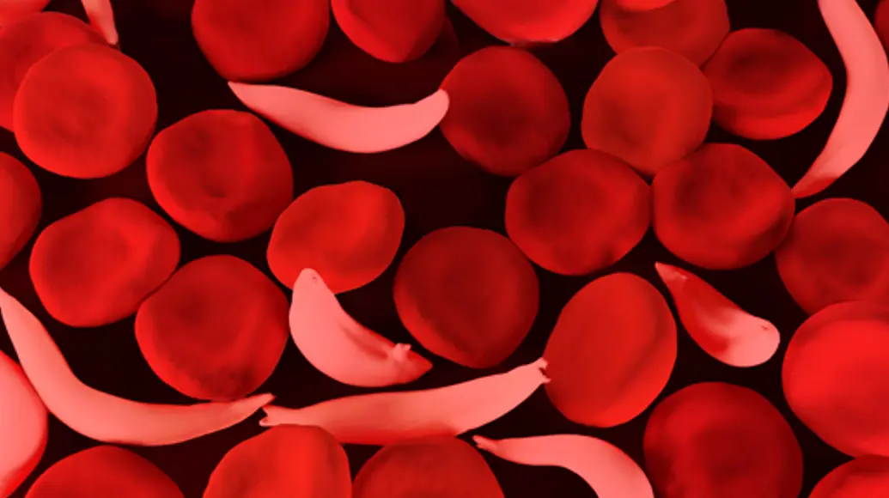

Sickle Cell Disease
ISickle cell disease is the most prevalent genetic hemoglobinopathy in the world affecting 160,000 individuals in the US and Europe and up to 10 million people globally. Sickle cell disease disproportionately impacts underserved populations with significant unmet need.
Pathophysiology
Sickle cell disease is a devastating inherited condition that causes red blood cells to become malformed and rigid (‘sickled’). The pathophysiology of the disease centers on an inherited single point mutation of the β‑globin gene (βGlu6→βVal6). The abnormal βS-globin protein combines with ‑globin to form Hemoglobin S (HbS). Unlike normal hemoglobin, Hemoglobin S molecules can self-assemble into stiff fibers or polymers that deform red blood cells causing the so-named ‘sickled’ shape of red blood cells.

Red blood cell sickling is the primary cause of the severe and highly morbid disease sequelae, such as painful crises, progressive organ
damage, poor quality, of life, and premature death. Patients entering the hospital for treatment of a pain crises often will require transfer
to the intensive care unit with a high risk (>10%) of mortality. The life span of SCD patients is also decades lower than the general
population (avg life expectancy of about 50).
‘Sickled’ red blood cells can severely alter blood flow rheology and vascular hemodynamics, resulting in severe microvascular occlusion,
inflammation, hemolysis, and oxidative stress. Disease progression is largely driven by intravascular hemolysis that triggers ischemia and
reperfusion associated with vaso-occlusive crisis and progressive organ damage.
Treatment
Bone marrow transplant and ex vivo gene therapies can provide a functional cure for patients with sickle cell disease. However, these therapies
not only are extremely expensive and carry substantial risk due to myeloablative conditioning, but they are only accessible to a small minority
of patients with the most severe disease. Fewer than 4,000 total patients are expected to be treated with ex vivo gene therapy in the first 7 years
following FDA approval.
A disease-modifying oral therapy for sickle cell disease that can transform it into a manageable chronic condition remains the holy grail for most
patients. However, only modest clinical benefits have been observed to date for commercial and clinical-stage oral drug therapies. No drug can yet
deliver dramatic disease-modifying benefits tantamount to functional cures reported for ex vivo gene therapies, and there remains critical unmet
need for better treatment options.